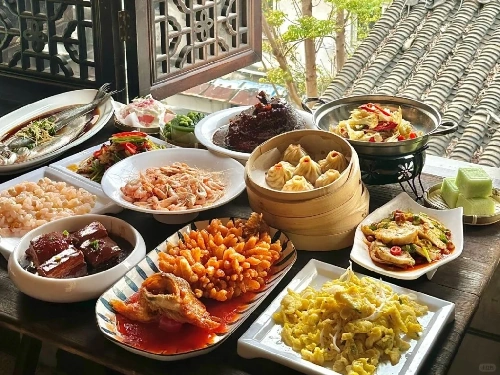
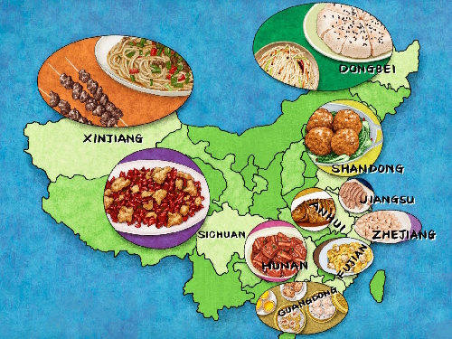
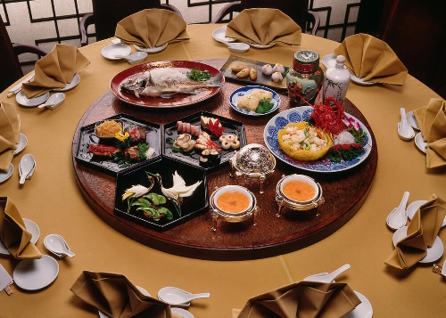

Historia
La cocina china tiene miles de años. Para aprender sobre la historia de china en el contexto de la comida entrá al siguiente articulo.
Investigar historia gastronómica...El propósito de este sitio es compartir algunos conocimientos sobre la cultura gastronómica china. A continuación, tiene distintas secciones para investigar la que más le llame la atención. También puede usar el menú de arriba para navegar facilmente entre las páginas.

La cocina china tiene miles de años. Para aprender sobre la historia de china en el contexto de la comida entrá al siguiente articulo.
Investigar historia gastronómica...China es un país muy grande y cada región tiene sus propias especialidades según sus respectivas tradiciones y disponibilidades. En este artículo podrás ver las diferencias entre cada región.

Investigar estilos regionales...Si te interesa saber como funciona la estructura de la comida china, en que orden se come la comida, la etiqueta, y costumbres chocantes, hacé click en el enlace.

Investigar usos y costumbres...